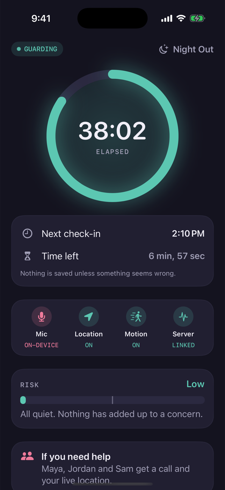
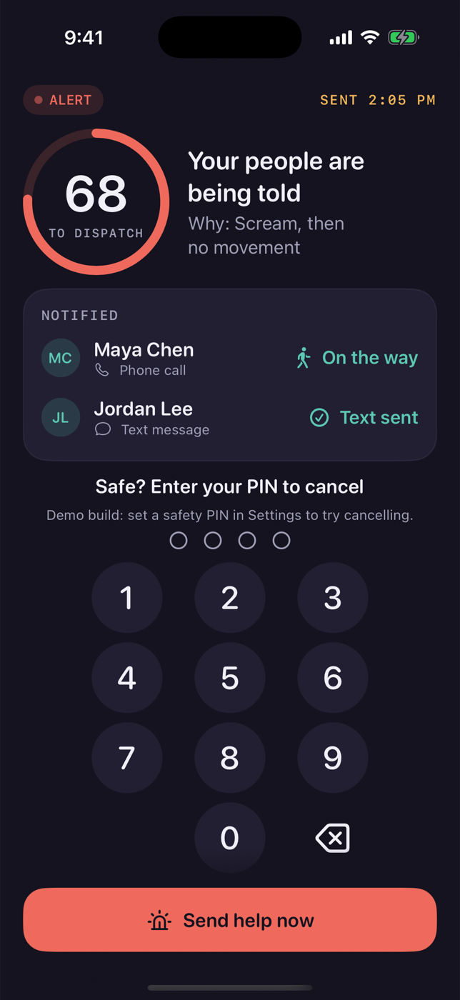
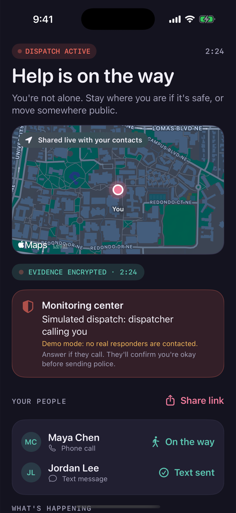

Real screens from our working iOS 26 build in the iPhone 17 Pro simulator, not mock-ups. They follow one Night Out session from calm guarding to an alert and help on the way.

1
Guard active
Level 0 · Guarding
The user started a Night Out session. Sound, speech and motion are analysed on the phone. The next check-in, the sensors in use and a plain-language risk meter are always visible.
"Nothing is saved unless something seems wrong."

2
Alert countdown
Level 2 · Alert
A scream followed by no movement, with no answer to the check-in, raised an alert without a tap. Contacts got a call and a live link, and the screen says why. Dispatch starts in 90 s unless the user cancels with their PIN.
A duress PIN looks exactly like cancelling but silently sends help.

3
Help is on the way
Level 3 · Dispatch
Professional monitoring takes over. Contacts see the live location and respond ("Maya is on the way"), and evidence is recorded encrypted on the device.
In the demo, dispatch is clearly labelled "simulated". No real responders are sent.